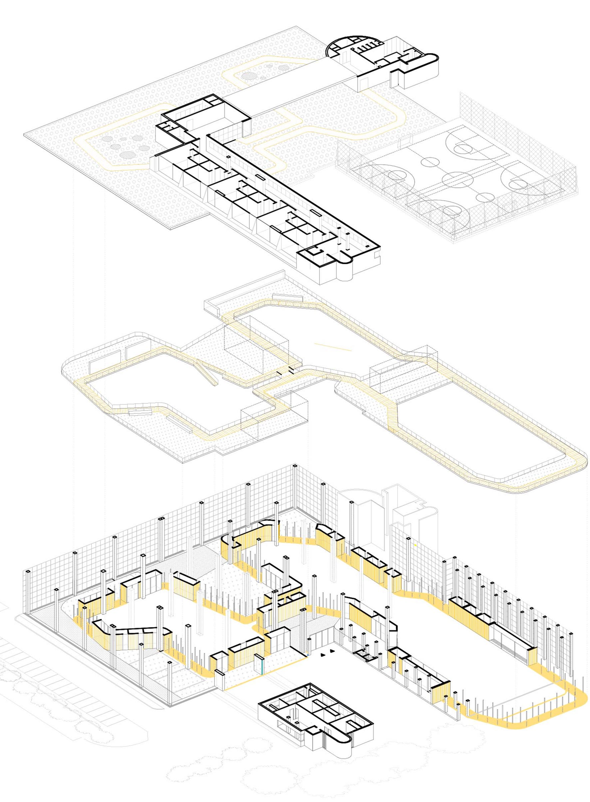
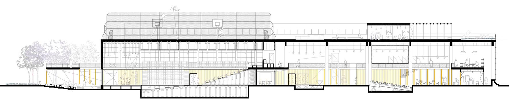
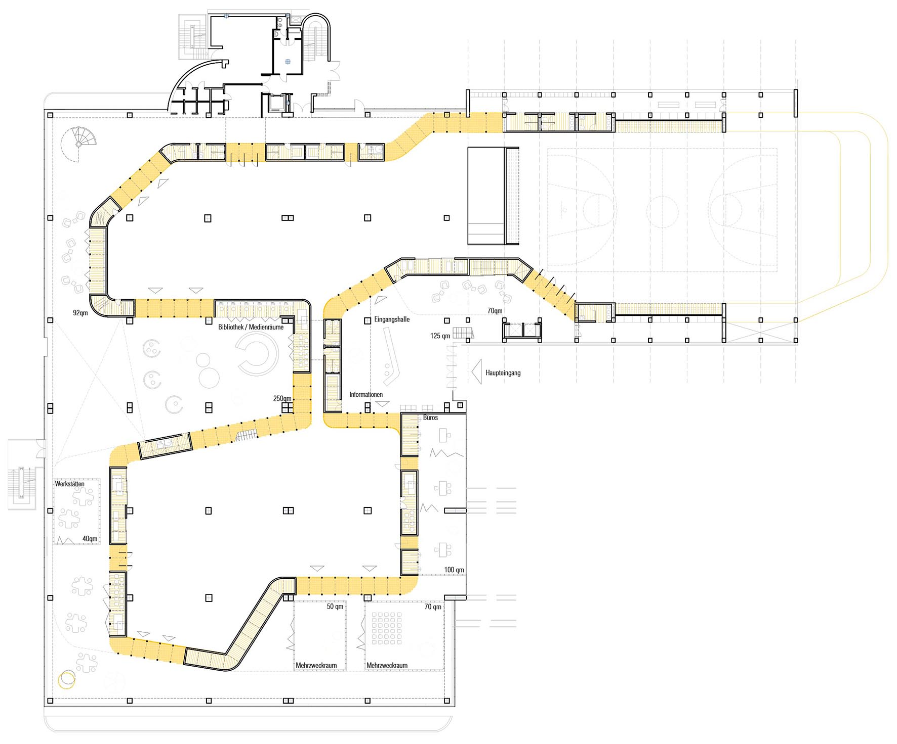
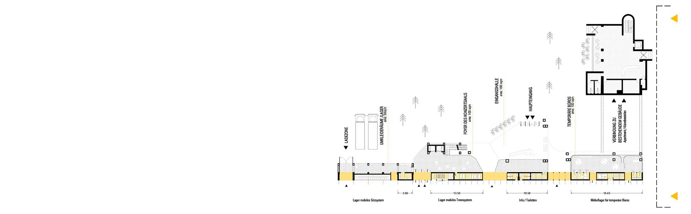
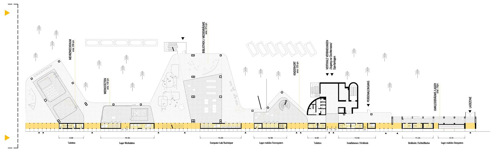
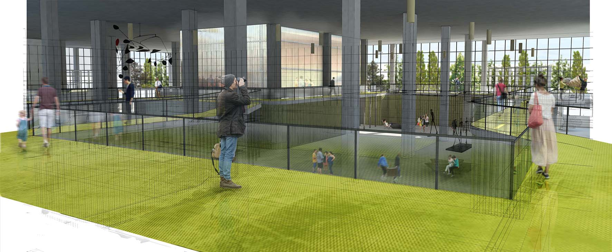
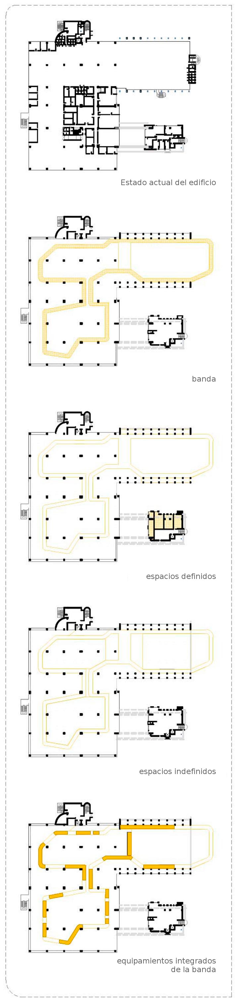

-

axonometría desplegada

sección transversal

planta de acceso

programa banda desplegado

programa banda desplegado_2

vista interior
La principal premisa del proyecto parte de la conservación de lo existente. Se mantiene tanto la estructura como el cerramiento del edificio, realizando una limpieza de elementos secundarios: forjados, tabiques, instalaciones, aseos... Se deja un espacio diáfano, solamente con la retícula de los pilares y las fachadas, donde se introduce un nuevo elemento más flexible y orgánico.
El nuevo programa del “Space to culture” se distribuye en torno a una banda. Este loop genera por una parte un recorrido a lo largo del edificio para el visitante y el usuario, y por otra parte delimita los nuevos usos en el espacio intersticial entre él/ello y el cerramiento. o en los espacios interiores al loop.
En la planta baja la banda toma grosor para servir a los espacions que delimita con almacenes, aseos, taquillas...La concentración de los usos fijos permite que los espacios que encierra permanezcan diáfanos, para lograr una mayor versatilidad y flexibilidad de cara a cambios en los usos.
Se trabaja con la temporalidad de los espacios con el objetivo de conseguir que el edificio permanezca “vivo” funcionando el mayor tiempo posible, siendo las necesidades de los usuarios las que vayan configurándolo en cada momento.
La distribución del programa exigido se basa tanto en el tamaño, como en la relación y flexibilidad entre/de los espacios.